Developing an ATP Forehand - Part1
Comprehensive unified tennis knowledge base — Fundamentals, Stroke Analysis, Reference Library, and more
Developing an ATP Forehand:Part 1: The Dynamic Slot
Brian Gordon, PhD
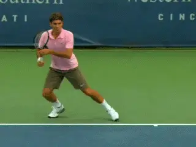
With the BEST system, anyone can develop the elements of an ATP forehand.
In this exclusive series of articles for Tennisplayer, I am presenting a new approach to understanding, learning and teaching tennis. The initial articles will cover the forehand, specifically our forehand model which is similar to what you see on the ATP tour. But then they will progress to the two-handed backhand and the serve as well.
This approach is different than previous teaching systems in a fundamental way. This is because it is based on years of quantitative biomechanical research, research that is also combined with extensive on court work with elite players and coaches.
The on court work has been conducted over the past two years at the Rick Macci Tennis Academy in Boca Raton, Florida. This on court development, guided by the quantitative research and analysis, has led to the development of a teaching system Rick and I call Biomechanically Engineered Stroke Technique, or the BEST system for short.
This initial series of articles will be an overview, based on coaching presentations I have done that attempt to simplify and make the BEST concepts accessible in the wider world of teaching and playing. John Yandell and I have worked back and forth on this article many times to present the information in a fashion he feels will be the most beneficial to Tennisplayer subscribers.
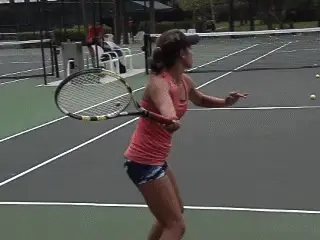
The first articles will deal with learning implications for players at all levels.
I do this with some reservation, however, because these initial articles will deal more with broad concepts, the conclusions themselves, and the BEST teaching implications without going into the full biomechanical research that provides their scientific basis.
That research basis is really the heart of the BEST System and very important to fully understanding how and why our system works. In a subsequent series of more technical articles I will be presenting the research in much greater detail for those who want to delve into science of biomechanics and understand the mechanical concepts that underlie the teaching concepts.
In addition to my work, Tennisplayer will also be publishing a series of articles from Rick himself, so subscribers will have the opportunity to see the approach through the eyes of one of the world’s best known developmental coaches.
The BEST System
Development of the BEST system has been a true collaboration with Rick Macci. Together Rick and I have worked to develop and implement it, primarily with sectional and nationally ranked juniors, but also with some pro players at various levels.

My collaborator Rick Macci has translated the research conclusions into teaching progressions.
My primary role has had two aspects. The first is a definition of a working model of optimal strokes from the perspective of the neuromuscular-skeletal system. The second is systematic assessment of player’s development in the system using quantitative 3D analysis. Rick’s contribution has been to use his unparalleled experience as a developmental coach to transform this information in to on court teaching progressions.
The Difference
It is important to emphasize that the BEST System was developed based on objective quantitative analysis of hundreds of players over many years. Specific stroke attributes have been assessed based on their neuromuscular-skeletal pros and cons in the production of racquet head velocity. This assessment was conducted without regard to individual players, but rather through the creation of a massive database.
Although I am not presenting many of the details of the mechanical concepts in this first series, I do want to stress that assessing the effectiveness of the BEST system on court is not a matter of theory or opinion. It is based on quantified data that allows us to track a player’s development and progression toward the model through regular 3D measurements.
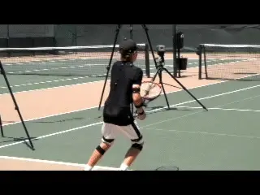
We use scientific grade 3D technology to measure racquet speed before, during, and after technical changes.
If we tell a student that following our interventions will increase their forehand racquet speed, we are able to demonstrate that this actually occurs. We know this because we have measured the actual speed of his racquet before, during, and after the changes.
Optimizing the Muscular System
I don’t believe that developing advanced technique is entirely a question of age, or of strength, or even of natural ability. It’s a question of teaching players to optimize the performance of their muscular systems.
My years of research combined with my current work with Rick have convinced me that it is possible to teach the BEST System forehand to everyone we work with. I mean that without exception, including even boys and girls as young as four years old.
It applies to competitive players at all levels and club players as well. Using this approach allows any player to literally turbocharge his forehand, by building a technical foundation skipping many of the typical developmental steps.
Too Good to Be True?
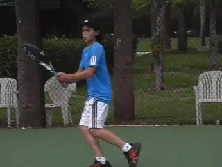
Developing a pro style forehand isn’t a matter of age, strength, or gender.
How is this possible? The process involves showing players how to use their muscles more effectively. This means utilizing neuromuscular optimization techniques such as elements of the stretch-shorten cycle, the same elements used by elite players.
The stretch-shorten cycle is a known mechanism in sport science and training. Generally it means that a muscle used in a given movement is first forcibly stretched in the opposite direction before it contracts.
Using elements of the stretch-shorten cycle significantly increases the muscles ability to deliver force. In tennis, that force can be systematically elicited through technique adaptation.
By establishing certain positions in the forehand motion, players can trigger stretch-shorten mechanisms automatically. This is why players at all levels of ability can develop ATP level forehand technique.
More Compact, More Power
One of the most fascinating aspects of the research is that this use of elements of the stretch-shorten cycle means that our forehand involves less motion not more. The forehand in our system is more compact than other options and therefore simpler to execute.
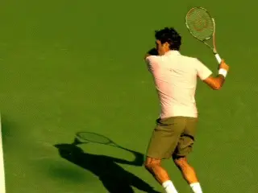
The ATP forehand model combines less motion with more power.
This is important given the increasing speed of the sport. As the levels go up, this more compact motion has a huge advantage—time. In the supersonic world of the pro game the players with the most power are also the players who are able to get to the contact most quickly. It may be a necessity at the highest levels of the pro game, but this combination of power and timing has incredible advantages for players at any level.
This is also why we monitor players every 3 months taking 3D measurements to make sure that when they decrease their range of motion or size of swing that the positioning of the hitting arm and the sequencing is correct and hasn't cost players racquet speed, and that in fact it has caused them to gain.
To say that less motion equals more racquet speed may seem counter intuitive. But in fact many observers have noted how the top players with the greatest forehands, especially on the men’s side, often have the most compact motions. Roger Federer is a classic example.
To repeat: what we have discovered is that when the table is set correctly, less motion actually can equal significantly more racquet head speed. We consider the ability to teach this to be a significant coaching breakthrough.
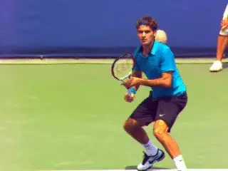
One of the most explosive forehands with one of the most compact motions.
In our forehand, players use elements of the stretch-shorten cycle to allow key muscle groups to perform more efficiently in the forehand, simply by adhering to specific positions of the body, hitting arm and racquet late backswing and early in the forward swing.
These positions and motions also allow players to increase the amount of independent arm motion in the forward swing, generating significant additional racket speed.
Background
Before we go into detail on how to make all this happen, let’s provide some background on how these concepts were developed. For more than 15 years, I have dedicated myself to researching the biomechanics of tennis strokes. My goal has been to define optimal stroke patterns.
That statement is based on an underlying assumption—that is there such a thing as an optimum stroke. And I believe this to be true. Although I am still in the process of refining the concepts, I think the picture is becoming increasingly clear.
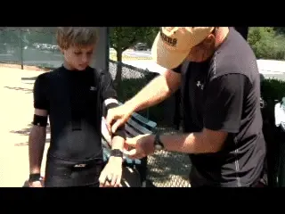
The BEST system is based on 3D measurements of hundreds of players.
Over the last decade I have measured hundreds of tennis players with 3D measurement technology. This has included elite Division 1 college players, elite juniors of all ages, and pro players at various levels.
How does this technology work? Through a scientific grade system of 10 infrared cameras each filming at 400 frames per second. The cameras track 60 reflective markers attached to the players using a suit and a series of elastic bands.
The measurement system is non-invasive, meaning it allows the players to move around the court unimpaired by cords or wires and produce their strokes naturally. This is the scientific version of the systems used in making animated movies and video games.
That’s how we capture and compute the 3D real-time data describing the movement of the human body hitting tennis strokes. Once we capture this data we then analyze it using custom designed computer software.
The software allows us to calculate the actual 3D position of the racquet and body at every instant in the stroke. These results in turn allow us to study the physics of the motion, what is called biomechanics.
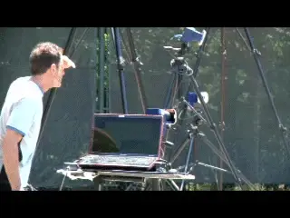
10 cameras, 60 sensors, 400 frames per second.
These data allow us to accurately measure the 3D joint angles, the velocity of the racquet and the body parts, rotational speeds, accelerations, and even calculate some forces and torques.
In essence it allows us to quantify everything that has an impact on the production or the quality of the stroke. And again, more about the research and the data to come.
The ATP Forehand
So what has all this research shown us about optimal forehand technique? It looks similar to what we see in men’s pro tennis, what I call the ATP style forehand.
It was no surprise to me that one critical factor in executing an ATP style forehand is perfect synchronization of leg drive, trunk rotation, and hitting arm movement. The surprise was in the details of the sequencing and positioning.
Entering the forward swing the hitting arm and racquet must be in exactly the correct position when the trunk rotation starts in order to gain muscular optimization. If done correctly players will create what I call the "dynamic slot."
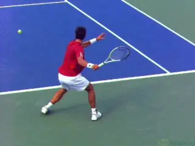
The ATP forehand: perfect synchronization of leg drive, trunk rotation, and hitting arm.
The dynamic slot is a specific, characteristic rotation of the hitting arm and racket in the early forward swing, in which the racket literally rotates down and backwards or "flips" over. But this happens automatically as a characteristic of the previous positions and movements. This is why we think of it as dynamic.
The idea of "finding the slot" in the forehand is not new. It’s common for players and teaching pros to talk about the racquet finding the slot with the butt of the racquet pointing at the ball.
But the "dynamic" slot is something entirely different because it results automatically from a particular series of positions and motions late in the backswing and in the early part of the forward swing.
What our research shows about the dynamic slot corresponds visually with what we see in the forehands on the ATP tour. As the high speed video on Tennisplayer demonstrates, the dynamic slot is a core commonality of the forehands of players including Roger Federer, Novak Djokovic, and Rafael Nadal. On court, Rick and I have proven that it is also something that virtually any player can develop for themselves
To create the dynamic slot and achieve this precise synchronization requires a very precise understanding of the forward swing. I define the start of the forward swing as the exact instant the hitting hand has BOTH forward and lateral speed, meaning the first instant it is moving both forward but also sideways along the baseline.
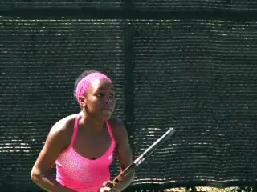
The Type 1 forehand with a large backswing and the racket pointing behind the body.
Three Types
Let’s see how all this works by studying the prevalent forehand models in competitive tennis. Without oversimplifying too much it’s fair to say that there are 3 distinct types.
Type 1
The Type 1 swing is prominent among junior level players, especially for younger players and at lower levels. Type 2 is common on the WTA tour. The Type 3 swing is what you see on the ATP tour and corresponds most closely to the principles discovered by research that we see in the BEST system.
At the end of the turns, the positions in all three swings are relatively similar, although the pro players tend to have better preparation of the legs with more knee bend, and sometimes better body turns as well. But when we look at the backswings, and in particular, the descending portions of the loop (when the hand is moving vertically downward), we start to see bigger differences between the types.
Junior players using the Type 1 forehand tend to have what we call the helicopter forehand swing, with a large (and sometimes extremely large) backswing. In these backswings the racquet typically goes back well behind the plane of the body defined by the shoulder joints and mid-hip joint location.
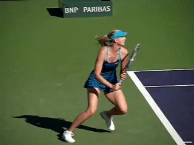
In the Type 2 swing, common on the WTA tour, the racket points less far behind the body.
By that I mean that the tip of the racquet, rather than pointing at the rear fence is actually pointing behind the player toward the side fence. In the extreme case, the racquet can be parallel to the baseline and pointing directly at the sideline.
The elbow also tends to be lower and in close proximity to the torso during the backswing. The result is that the Type 1 forward swing tends to be more of a unitary and circular motion, with the trunk and the arm moving forward together, so that there is little independent motion of the hitting arm.
This Type 1 racquet positioning is common in junior players, and especially girls. And this is not a random event. There's a reason the players do it.
Developing juniors often use as much range of motion (as big a swing) as they possibly can in an effort to generate racquet speed. So they take their racquets as far back in the backswing as they possibly can.
This strategy may succeed to some extent in generating racquet speed. However, as players progress through the higher levels there is an obvious downside.
This is in terms of the timing. Starting the forward swing from further away behind the body means traveling a greater distance to reach the contact point. That simply takes longer.
Type 2
Compare this to the Type 2 swing. This is the swing that is prevalent on the woman’s WTA tour.
Generally the lateral component in the backswing is more moderate so that the racquet head tends not to point as far (laterally) behind the body. The body preparation and the use of the legs is usually better.
You also see less of a unitary forward swing. Yet you can still see that even the very top players in the women’s game are using length of swing to generate speed. This type of swing has adverse timing implications, and these are more apparent at higher levels.
Another downside is that the lateral component to the backswing mandates a more circular path. The hand must come from further behind the body and on more of a curve to reach the contact.
This means less independent pull through of the hitting arm in the forward swing. While conducive to generating forward speed of the racquet, this swing path makes it more difficult to combine the forward racquet speed with vertical speed for spin. In essence, there is a trade off between ball speed and spin.
This is why there is no true “heavy ball” in women’s tennis, as we see in the men’s game. The positioning of the hitting arm in both the Type 1 and Type 2 forehands simply does not allow players to generate high ball speed and heavy spin at the same time.
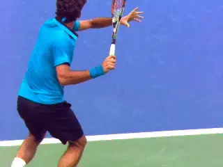
In the ATP forehand, the arm is on a diagonal with racquet head above and on the hitting side of the hand.
This is why the ball speeds in women’s tennis can approach or even equal those of the men. But the spin component is significantly less. As John Yandell’s high speed filming has shown, top women may average 1500rpm on the forehand, while the men are a minimum of 2500rpm or higher.
Type 3
Now let’s compare that to the Type 3 swing, or the ATP style of forehand we see in the men’s game. First, notice how in the backswing the elbow has moved further away from the torso.
But the most distinct difference is the position of the racquet in relation to the hand. In the Type 3 swing, the racquet head is on the hitting side of the hand as the hand starts to move forward. The racquet head is also above the hand, and the entire arm is extended away from the body toward the back fence on a slight diagonal skew to the hitting side.
This is a critical point to understand. Without even talking about racquet speed, the obvious advantage here is that this position significantly decreases the distance to the contact point. This in turn decreases the time required. If I have a smaller range of motion and all else equal, I can get to contact quicker.
But that is only part of the benefit. The position of the hitting arm and racquet in the ATP swing means that the top players are able to incorporate far more independent arm motion from the shoulder joint in the forward swing.
The independent arm motion and the more direct forward path of the hand optimize the amount and the direction of the force a player can apply to the racquet grip with his hand. This is what sets up the ability to use the stretch-shorten cycle component enhancement in the forward swing--and to generate the additional racquet speed.
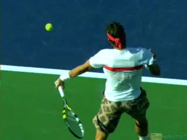
Watch the more linear path to contact and internal rotation of the hitting arm structure in the forward swing.
By independent arm motion I mean the forward motion from the shoulder, but also (for a right-hander) the counterclockwise or internal rotation of the entire hitting arm structure. When executed properly this independent arm motion significantly contributes to racquet head velocity.
A final major advantage of the hitting arm position is that the more direct arm path for the elbow and hand during the forward swing makes it easier to pull the arm through the torso rotation. Rather than approaching the ball on a curve more from the players left, the swing is more directly forward.
This facilitates the ability to position the arm further forward at contact. This forward positioning makes it far easier to isolate and partition joint rotations for forward racquet head speed and/or vertical racquet head speed.
This means ball speed and spin can be concurrently optimized. This combination of rotations is what creates the true “heavy ball”. This is the major technical difference between the forehands on the men’s and women’s tour.
Stretch-Shorten Cycle
Most coaches and players have probably heard of the concept of the stretch-shorten cycle, as it has often been used--and often inaccurately—to describe elements of the strokes. But what does that concept actually mean? And how does it really apply to the forehand?
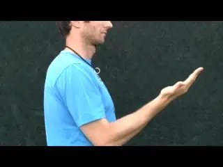
A simple muscle contraction compared to one enhanced through use of pre-stretching.
The stretch-short cycle is a muscle enhancing mechanism in which a series of events in a motion such as a tennis stroke increases muscular force production capability. This series of events is usually a counter-rotation at a joint – that is to say a joint rotation in one direction immediately followed by rotation in the other direction.
To better understand this, let’s consider a simple example, such as bending (flexing) the elbow. Typically if you want to bend your elbow, the brain sends a command to the bicep muscle that crosses the elbow joint. The biceps muscle in turn shortens or contracts.
This in turn causes the elbow to bend after a brief delay due to command transmission time. Simple enough.
But let’s assume that as you try to bend your elbow, someone else pulls your forearm in the other direction, causing the elbow to actually straighten rather than bend. In this event, even though the bicep is contracting and attempting to shorten, it is actually being forced to lengthen and/or stretch by the pull in the other direction.
This places the bicep in a very high force state. Technically this state is known as an eccentric contraction.
Now consider what happens if the person forcing the elbow to extend suddenly lets go. The bicep can now shorten from this enhanced state, generating significantly more force. This sequence of events constitutes a stretch-shorten cycle.
I will go into more technical detail about individual force enhancing components of the stretch-shorten and the exact mechanisms used on the forehand in future articles. But for now, suffice it to say, the components of the stretch shorten cycle greatly enhance a muscle’s ability to generate contractile strength.
Muscular Enhancement in the Type 3 Forehand
This same principle of muscular enhancement through the use of elements of the stretch shorten cycle is the cornerstone of the Type 3 or ATP style forehand. It also forms the foundation of technique development in the BEST System.
Let’s see how this muscle enhancement functions in the use of independent arm motion and the creation of the dynamic slot and in the forward swing. This is the secret to turbocharging your forehand.
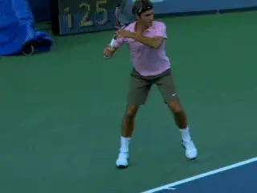
The hitting arm on a diagonal, with the racket head above and to the right of the hitting hand.
Recall that in the type 3 forehand that the elbow is elevated and away from the torso and in line with the shoulders.
Note that the hitting hand is slightly to the hitting side of the elbow and the racquet head is slightly to the hitting side of the hand, and that it is also above the hand.
The result of this positioning is to extend the combined mass of the hitting arm and racquet away from (behind) the shoulder joint at the completion of the backswing.
The line of the arm is also on a slight diagonal away from the torso. This extended position is in stark contrast to the positions in the Type 1 and 2 forehands where the hand and racquet are laterally behind or close to the torso.
This positioning means that when the leg drive, hip rotation, and upper trunk rotation sequence is initiated, a force is exerted on the arm at the shoulder joint. Due to the position of the arm and racket and the mass distribution this creates, the arm tends to lag slightly behind.
As it lags, it is applying an eccentric or counter stretch to the shoulder muscles similar to what we saw in the elbow bend example. These are the muscles that are about to be used to pull the arm forward in the forward swing.
The body’s response is to contract these shoulder muscles to counter the lag. The result is the creation of elements of the stretch-shorten cycle.
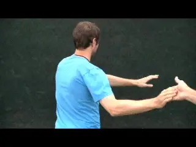
Holding back the arm demonstrates how the sling shot is created.
The effect off all this on the swing is powerful and results in the creation of what I sometimes called the sling shot effect. You can feel how this works by (gently) holding a player’s arm back as the torso rotates, and then releasing the arm once a stretch is established.
To this point in the motion, we have the racquet and the arm extended away from the torso on a slight diagonal with the racquet head above and to the outside of the hand. We have seen the trunk rotation creates the lag in the arm/racquet structure and this in turn eccentrically stretches the shoulder muscles.
Now to initiate the forward swing the player starts to pull the grip of the racquet forward. This pull with the hand creates a forward and slightly lateral force applied to the end or grip of the racquet.
The size and direction of the puling force is important and a combined effect of torso (hip and upper trunk) rotation and independent forward arm motion from the shoulder joint – arm motion that has been enhanced as just described.
The Flip
The pulling force on the grip in turn creates what we call the “flip,” or the backward racquet rotation. The flip happens because the force generated by the pull on the grip actually causes the racket to rotate in the opposite direction – downwards and backwards to the non-hitting side of the hand.
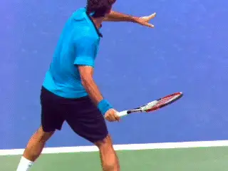
As the hand starts to pull forward, the flip creates the dynamic slot.
This flip motion is what creates the dynamic slot. The dynamic slot is created automatically when the rotation or flip of the racquet causes counter-rotation of key hitting arm joints early in the forward swing.
I say counter-rotations because these flip driven joint rotations are in a direction opposite to the rotations of the same joints later in the forward swing (near contact). For example, racquet rotation in the dynamic slot causes the upper arm to rotate backward (external shoulder rotation) prior to being reversed (internal shoulder rotation) near contact.
The most critical of these counter-rotations is of the upper arm (external rotation of the shoulder joint) and, to a lesser extent, the counter-rotation of the forearm (supination).
There is a third rotation that is also important for positioning, although it is not targeted for stretch-shorten enhancement as some coaches believe. This is the wrist lay- back (or extension). The fascinating and complex role of how the wrist actually functions in the ATP forehand will be detailed in future articles.
One More Time
So let’s review the creation of the dynamic slot. When the hand starts to pull the racquet forward, the rotation or flip of the racquet causes three things to happen. The upper arm rotates backwards (shoulder external rotation). The forearm also rotates backwards (forearm supination). The wrist is also forced into a laid back position (wrist extension), with this laid back position being more extreme using the more conservative grips like Federer.
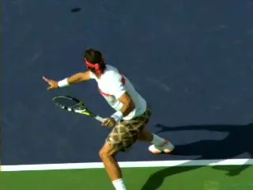
In an extreme flip the racquet tip can end up pointing down toward the court.
If you watch pro forehands in slow motion you can see all these motions occur to varying degrees depending on the player and exact shot. The effect is often so drastic that at the end of the flip, the tip of the racket ends up pointing downward at the court.
And here is the critical point. The dynamic slot occurs during the start of the forward swing, not in the back swing. It happens as a result of the player pulling the grip forward which causes the racquet to rotate or flip. The flip of the racquet then causes the key arm joint counter-rotations (most critically, the shoulder external rotation) – and this is what creates the conditions for muscular enhancement at the key arm joints.
It is very important to understand how this happens as a consequence of the correct positions and motions, and not through the conscious muscle manipulations of the player. The downward and backward racquet rotation is causing the joint rotations and NOT the associated muscles.
In fact, the muscles opposing the joint rotations are actually working (eccentrically stretching) to control the depth of the racquet rotation. This creates two very positive scenarios. First, this is engaging elements of the stretch-shorten cycle for muscular enhancement in the forward swing. Second, the depth of the racquet rotation, critical to the ball speed/ball spin relationship at contact, simply has to be controlled rather than manufactured.
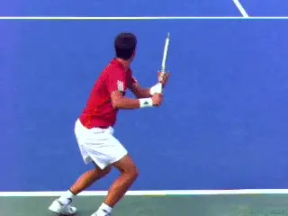
Players are not robots so the creation of the dynamic slot has variations.
By that I mean, with the ATP forehand, producing a more vertical racquet path in the forward swing (for more spin) is simply done by allowing the racquet to rotate more in the dynamic slot with minimal change to the overall motion pattern. By contrast, larger adjustments to the overall pattern of motions of the body segments must be consciously “manufactured” to attain the more vertical path with the other types of forehands. The powerful implications of this will be covered in greater detail in future articles.
We see individual variations in the dynamic slot because everyone is not a systematically programmed robot. But the key points are the same.
The top players minimize their range of motion and create incredible racquet head speed with the flip into the slot. The synchronized motion of the hitting arm with the trunk is what creates the conditions for this “turbocharging” effect.
The fact is that this chain of events to set up the dynamic slot, if executed correctly, is an eloquent, simple way to utilize muscular enhancement to maximize racquet head velocity. The most encouraging thing to us mere mortals is that these optimizations are dependent on technique -- only not the technique not found in the Type 1 and Type 2 forehands.
Back to Strength
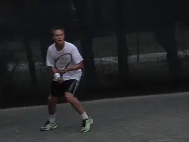
It requires a process, but any player can make the leap to the ATP style forehand.
So let’s return to the question of strength. Many coaches believe that if you have a shorter swing, clearly you have to be stronger because you're accelerating the racquet over a shorter period.
What the data and our experience working with players everyday shows is that it isn’t necessary to be stronger to do this because the primary mechanism isn’t strength. While strength definitely helps, it is player's ability to optimize the performance of their muscular system through the very specific positions and actions of the ATP style swing that is most important.
If it is true that muscle performance optimization through technique is more important than strength, it follows that virtually anyone can make the leap from Type 1 to Type 3 directly. Admittedly this is not always an instantaneous process and needs to be guided through carefully planned progressions and training, but it is possible and achievable for virtually any player.
And One More Time
Understanding the results of 15 years of research is a lot to take in in just one article. So let’s review what we have learned by looking at the near perfection of the Type 3 or ATP forehand in the creation of the dynamic slot from what I consider the clearest perspective, which is from the rear view.
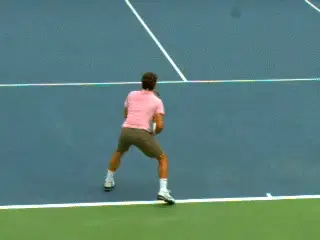
The ATP dynamic slot: unit turn, descending loop with hitting arm and racket positioned to right of hand, the start of the pull, and finally the flip into the dynamic slot.
Watch the full unit turn with both hands on the racquet. Note that during the unit turn the elbow is perfectly positioned away from the torso and roughly in line with the shoulders.
Now note the descending part of the loop with the hand moving downward. The player keeps the elbow elevated and straightens it out to a greater or slightly less degree.
At the conclusion of the descending portion of the loop note the elbow is still elevated, the hand is to the hitting side of the elbow, and the racquet head is above, and to the hitting side of, the hand. The hitting arm and racquet are on a slight diagonal to the shoulder.
Next watch how the forward movement of the hand initiates the forward swing. The forward motion of the hand creates a pulling effect or force applied to the grip of the racquet. This force, in turn causes the racquet to rotate or flip down and back.
As the racquet rotates, this causes the shoulder to externally rotate or rotate backwards. The forearm also supinates or rotates backwards. Finally note how the wrist extends to a laid back position—but as will be discussed in later articles, not for the reasons held in some coaching circles.
The slot can only be considered a “dynamic slot” if there are elements of the stretch-shorten cycle involved. This is why the quality of the forehand positions can only be assessed through quantitative analysis. And again more on that later, and how you can have the opportunity to be measured yourself.
So that’s it for part one. Stay tuned for the next article on what happens next in the forward swing.
In that article we will look at how dynamic slot enhancement affects racket velocity at contact. Further we will look at how arm geometry, or the hitting arm positions (double-bend versus straight arm) affect that enhancement. Finally, we will investigate the final racquet acceleration to contact, a subject that will come as quite a surprise to many. Should be interesting!

Dr. Brian Gordon has changed the understanding of the biomechanics of high level tennis technique. His Biomechanically Engineered Stroke Technique (BEST) is the only empirically based stroke mechanics system in the world, growing from three decades of both academic and applied on court research. He is a founder of the Tennis Center for Performance Research in Miami, Florida, which is creating a new paradigm for player development. The center has assembled an unprecedented group of specialists with cutting edge knowledge across the entire range of tennis performance.
To visit his website, Click Here!
Top contact him directly, Click Here!
Source: tennisplayer.net archive — Developing an ATP Forehand - Part1.docx (John Yandell teaching library, 2002-2022). Extracted and rendered as HTML for Tennis Future Lab.